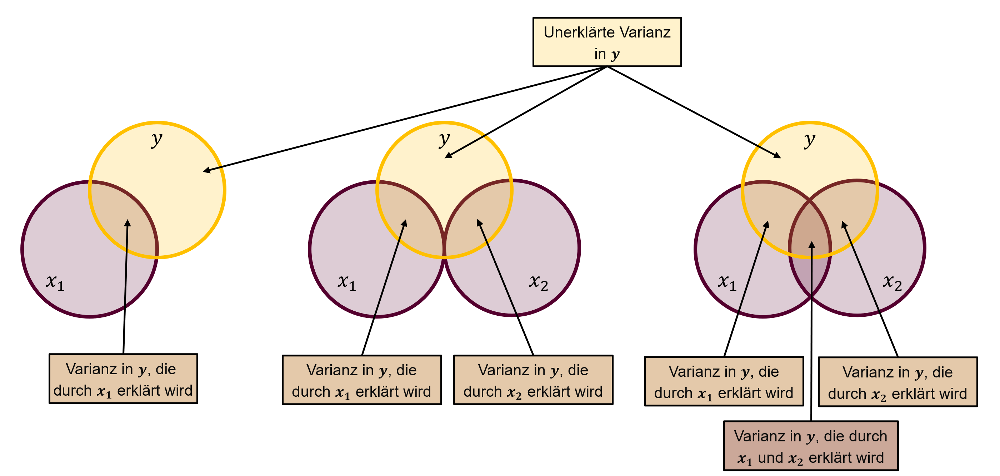
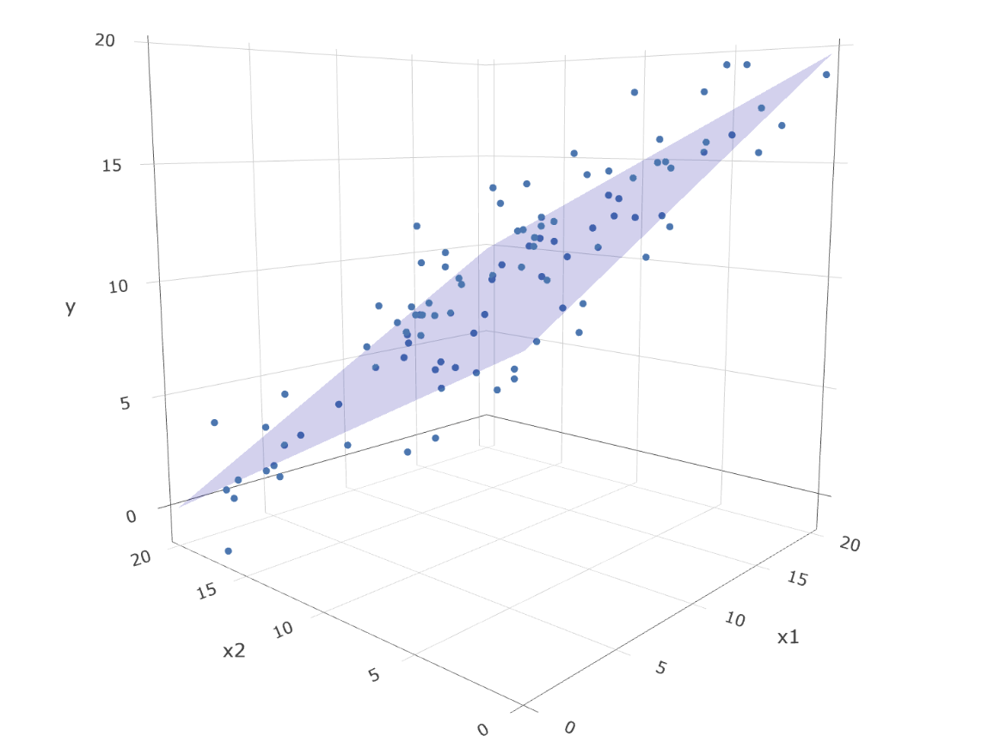

# Modell mit x1 als Prädiktor
m_x1 <- ___Übung 12
Lernziele dieser Übung
Nach der heutigen Übung können Sie:
- beschreiben, wofür sich die multiple Regressionsanalyse eignet und welche Voraussetzungen sie erfordert
- anhand eines Studienbeschriebs und eines Datensatzes eine Fragestellung entwickeln und ein dazu passendes Regressionsmodell spezifizieren
- die Voraussetzungen für eine multiple Regression prüfen
- eine multiple Regressionsanalysen berechnen
- Ergebnisse einer multiplen Regressionsanalyse interpretieren und berichten
Aufgabe 12.0: Projektumgebung erstellen
Dateien und Packages für die Übung vorbereiten:
- Laden Sie den Datensatz
sat_act.csvherunter und speichern Sie den Datensatz imdata-Ordner des RProjektsregression.
Falls Übung 11 nicht durchgeführt
- Laden Sie den Projektordner
regressionherunter und entzippen Sie den Ordner.1 Der Projektordner enthält:- RProjekt
regression.RProj - Datensatz
stressanxiety.csvfür Übung 11 - Datensatz
sat_act.csvfür Übung 12
- RProjekt
- Installieren Sie (falls noch nicht vorhanden) die benötigten Packages unter
Tools>Install Packages...oder in der Konsole mitinstall.packages("performance")2
Öffnen Sie das RProjekt
regression.Erstellen Sie ein RNotebook namens
uebung-12.
Aufgabe 12.1: Positive und negative Regressionsgewichte
Was bedeuten folgende (fiktive) Resultate?
A. Eine Studie hat den Einfluss von Musikstunden pro Woche auf das Abschneiden in einem Intelligenztest bei 15-jährigen untersucht. Die Studie hat ein \(b_0\) = 98.72 und ein \(b_1\) = 0.25 gefunden.
B. Eine Studie hat den Zusammenhang von Musikstunden pro Woche und dem dem Abschneiden in einem Sportleistungstest bei 15-jährigen untersucht. Die Studie hat ein \(b_0\) = 34.3 und ein \(b_1\) = -1.21 gefunden.
C. Eine Studie hat untersucht, wie sich die Lebenszufriedenheit verändert wenn Personen mehr oder weniger Unterstützung durch die Spitex erhalten. Die Studie hat ein \(b_0\) = 5.7 und ein \(b_1\) = -0.002 gefunden.
Wie würden Sie das Resultat einer Person erklären, die die Regressionsanalyse nicht kennt? Formulieren Sie in einem Satz aus, was die Ergebnisse bedeuten.
Evtl. helfen folgende Unterfragen dabei:
Was ist die AV, was ist die UV?
Wie verändert sich die AV in Abhängigkeit von der UV?
In welchen Beispielen finden Sie standardisierte und in welchen unstandardisierte Variablen sinnvoller?
Aufgabe 12.2: Einstieg in multiple Regression
a. Was unterscheidet die einfach von der multiplen Regression? Was ist der Mehrwert?
b. Was sind die Voraussetzungen für die multiple Regression?
c. Welche Fragestellung würden Sie untersuchen wollen, bei der eine multiple Regression zur Anwendung kommen könnte?
d. Suchen Sie mit dem Suchbegriff “we used a multiple regression” oder “a multiple linear regression model was used” sowie einem Begriff für ein Thema in der Psychologie, dass Sie interessiert in einer Datenbank nach Artikeln.
Schauen Sie sich dann an, was diese Studien untersucht haben und lesen Sie die Results-Section. Finden Sie die Kennwerte der Regressionsanalyse? Was verstehen Sie bezüglich der Analyse, welche gemacht wurde und welche Resultate sie lieferten? Was bleibt unklar?
Diskutieren Sie kurz miteinander, was Sie gefunden haben.
Aufgabe 12.3: Regressionsgleichung der multiplen Regression
a. Wie lautet die Bestimmungsgleichung der Regressionsgeraden in der multiplen Regressionsanalyse? Schreiben Sie die Gleichung für zwei Prädiktorvariablen auf.
b. Was bedeutet der Wert \(b_1\) in der multiplen Regression?
c. Ergänzen Sie den folgenden Text zur Additivität der Regressionskomponenten:
Ein beobachteter -Wert lässt sich additiv zerlegen in \(b_0\), den mit \(b_1\) Wert von \(x_{m1}\) (), den mit \(b_2\) Wert von \(x_{m2}\) (), und den \(e_m\).
Fassen Sie in einfachen Worten zusammen, was Additivität der Regressionskomponenten bedeutet und tauschen Sie Ihre Definitionen aus.
Aufgabe 12.4: Multiple Regression berechnen I
Bearbeiten Sie diese Aufgabe im RNotebook uebung-12.
In dieser Aufgabe berechnen wir die Regression für das Datenbeispiel sat_act.csv.
Prüfungsscores
Beschreibung der Daten
Diese Daten wurden im Rahmen des SAPA-Projekts3 erhoben, um Online-Messungen von Testleistungen zu entwickeln (Revelle, Wilt und Rosenthal, 2009).
Der Datensatz (n = 700) beinhaltet die Variablen:
age: Alter in Jahrengender4: m (1), f (2)education: Selbstberichteter Bildungsgrad (1 = high school … 5 = graduate work)ACT: Testscore ACT (American College Testing)SATV: Testscore SAT (Scholastic Assessment Test) VerbalSATQ: Testscore SAT (Scholastic Assessment Test) Quantitativ
Quelle: Revelle, William, Wilt, Joshua, und Rosenthal, Allen (2009) Personality and Cognition: The Personality-Cognition Link. In Gruszka, Alexandra, Matthews, Gerald und Szymura, Blazej (Hrsg.) Handbook of Individual Differences in Cognition: Attention, Memory and Executive Control, Springer.5
a. Fragestellung
Welche Fragestellung möchten Sie bearbeiten mit den oben gegebenen Variablen? Überprüfen Sie die Voraussetzungen für die Regression (metrische Variablen und Linearität).
- Wählen Sie dafür drei Variablen aus (eine AV und zwei UVn).
- Formulieren Sie die Fragestellung und schreiben Sie sie in Ihr RNotebook.
- Schreiben Sie sich auf: Welche Variable ist \(y\)? Welche \(x_1\) und welche \(x_2\)?
- Denken Sie, dass \(x_1\) und \(x_2\) zusammenhängen?
b. “Präregistrierung”
Verfassen Sie ein Resultatetext ohne zu wissen welche Resultate die Analyse ergeben wird. Lassen Sie die Werte deshalb noch weg. Schreiben Sie einen Text für das für Sie wahrscheinlichste Ergebnis.
c. Datensatz vorbereiten
- Lesen Sie den Datensatz
sat_act.csvaus demdata-Ordner Ihresregression-Projekts ein und speichern Sie ihn unterd_sat_act. - Transformieren Sie die Variable
genderin eine kategoriale Variable. - In den SATQ-Scores gibt es einige fehlende Werte (missings). Filtern Sie diese heraus wie hier beschrieben.
Führen Sie diese Schritte idealerweise mit der Pipe (|>) aus, damit sie die Objekte nicht überschreiben/neu benennen müssen. Bei korrekter Ausführung bleiben 687 Datenpunkte (obs.) in 6 Variablen..
d. Variablen bestimmen und Voraussetzungen prüfen
- Schauen Sie für beide Variablenpaare \(y ~ x_1\) und \(y ~x_2\) den Zusammenhang mit je einem Plot an. Ist die Annahme der (Quasi-)Linearität ok?
e. Regressionsmodelle berechnen und vergleichen
- Berechnen Sie das einfache lineare Regressionsmodell mit \(x_1\) als Prädiktorvariable.
- Berechnen Sie das einfache lineare Regressionsmodell mit \(x_2\) als Prädiktorvariable.
# Modell mit x2 als Prädiktor
m_x2 <- ___- Berechnen Sie die multiple Regression mit \(x_1\) und \(x_2\) als Prädiktorvariablen.
# Modell mit x1 und x2 als Prädiktoren
m_x1x2 <- ___Vergleichen Sie den Achsenabschnitt und die Regressionskoeffizienten zwischen den Modellen. Was sehen Sie?
f. Voraussetzungen überprüfen
Schauen Sie sich mit den Model-Check Funktionen aus dem {performance}-Package an, ob die Voraussetzungen für die multiple Regression gegeben sind. Falls die Annahmen verletzt sind: Sehen Sie in den Plots, weshalb?
Aufgabe 12.5: Varianzaufklärung und Determinationskoeffizienten
Was sagt ein Determinationskoeffizient aus? Wann ist er 0? Wann ist er 1?
Erstellen Sie eine Tabelle mit den Spalten Modell, Prädiktor(en), \(R^2\), \(\triangle R^2\). Fügen Sie aus den obigen Modellen die Prädiktoren, das \(R^2\) sowie die in dem Modell zusätzlich erklärte Varianz (\(\triangle R^2\)), also die Differenz von \(R^2\) zum vorherigen \(R^2\), ein.
| Modell | Prädiktor(en) | \(R^2\) | \(\triangle R^2\) |
|---|---|---|---|
| \(m_{x1}\) | |||
| \(m_{x2}\) | |||
| \(m_{x1x2}\) | |||
| \(m_{x2x1}\) |
- Was passiert mit \(R^2\), wenn Sie die Reihenfolge der Prädiktorvariablen umdrehen?
# Modell mit x2 und x1 als Prädiktoren
m_x2x1 <- ___Vergleichen und diskutieren Sie kurz mit jemandem, der andere Modelle gerechnet hat. Was fällt Ihnen auf?
Wieso heisst der Determinationskoeffizient \(R^2\)? (Tipp: Auf https://rpsychologist.com/correlation/ können Sie Daten/Korrelationen simulieren und die Korrelation und den \(R^2\)-Wert vergleichen)
Zeichnen Sie auf, wie viel Varianz Ihre gewählten Variablen in der Varianz von \(y\) aufklären. Zeichnen Sie dies mittels 3 Kreisen auf.

Aufgabe 12.6: Resultate berichten
Lassen Sie sich mit summary() den Output des Modells \(m_x1x2\) ausgeben. Um nur die Regressionskoeffizienten anzuschauen, können auch model$coefficients oder summary(model)$cofficients verwenden.
___(___)
___$coefficients
summary(____)$coefficientsFüllen Sie nun die Werte in den Resultate-Text, den Sie in Aufgabe 12.4b vorbereitet haben.
Fügen Sie noch einen Satz zu den Modellannahmen ein (erfüllt, nicht erfüllt?).
Hätten Sie dieses Resultat erwartet? Diskutieren Sie zusammen, ob Ihre Intuition und die Resultate übereingestimmt haben.
Zusatzaufgaben
Zusatzaufgaben
Zusatzaufgaben müssen nicht gelöst werden.
a. Interaktiver Plot: Regressionsebene
Mit dem R-Skript können Sie Datenpunkte simulieren und diese dann mit der gefitteten Regressionsebene in R plotten. Das Skript erstellt einen interaktiven 3D-Plot im Plots-Fenster (rechter unterer Quadrant). Der 3D-Plot visualisert, wie bei zwei Prädiktoren eine zwei Regressionsgeraden eine Ebene ergeben.
Vorgehen:
- Installieren Sie das Package {plotly} mit
install.packages("plotly")in der Konsole. - Laden Sie das R-Skript
regressionplane_3dmodel.Rherunter, um neue Daten zu simulieren oder das R-Skriptregressionplane_3dmodel_tibble.R, um die Werte der Variablen einzuheben. - Plotten Sie die Grafik. Finden Sie ungefähr die Werte von \(b_0\), \(b_1\) und \(b_2\)?
- Verändern Sie die Werte und plotten Sie die Grafik erneut.

b. Regressionskoeffizienten vergleichen (für Interessierte)
Vergleichen Sie die Regressionskoeffizienten \(b_1\) zwischen den Modellen \(m_x1\) und \(m_{x1x2}\). Welcher Fall trifft zu? Was bedeutet das?6
- A. \(b_{einf}\) = \(b_{mult}\): Das Regressionsgewicht \(b_1\) ist im Modell \(m_{x1}\) entspricht dem Regressionsgewicht \(b_1\) im Modell \(m_{x1x2}\).
- B. \(b_{einf}\) > \(b_{mult}\): Das Regressionsgewicht von \(b_1\) ist im Modell \(m_{x1}\) grösser als \(b_1\) im Modell \(m_{x1x2}\).
- C. \(b_{einf}\) < \(b_{mult}\): Das Regressionsgewicht von \(b_1\) ist im Modell \(m_{x1}\) kleiner als \(b_1\) im Modell \(m_{x1x2}\).
Für das Entzippen mit Windows machen Sie einen Rechtsklick auf den Ordner mit dem Reissverschluss und wählen Sie
Entpacken nachund geben Sie den Ordner an, in dem Sie alle Ihre RProject-Ordner speichern. Für das Entzippen mit Mac speichern Sie den heruntergeladenen Ordner in den Ordner, in dem Sie alle Ihre RProject-Ordner speichern und Doppelklicken Sie danach auf den Ordner. Nur entzippte Ordner können einwandfrei verwendet werden.↩︎Es werden beim Herunterladen zusätzliche Packages installiert, geben Sie dafür bei Aufforderung in der Konsole
yein.↩︎Dies ist ein älterer Datensatz, heute werden sex und gender unterschieden und weitere Antwortkategorien gegeben z.B. d↩︎
https://vincentarelbundock.github.io/Rdatasets/doc/psych/sat.act.html↩︎
siehe S. 635 in Eid et al. (2017)↩︎